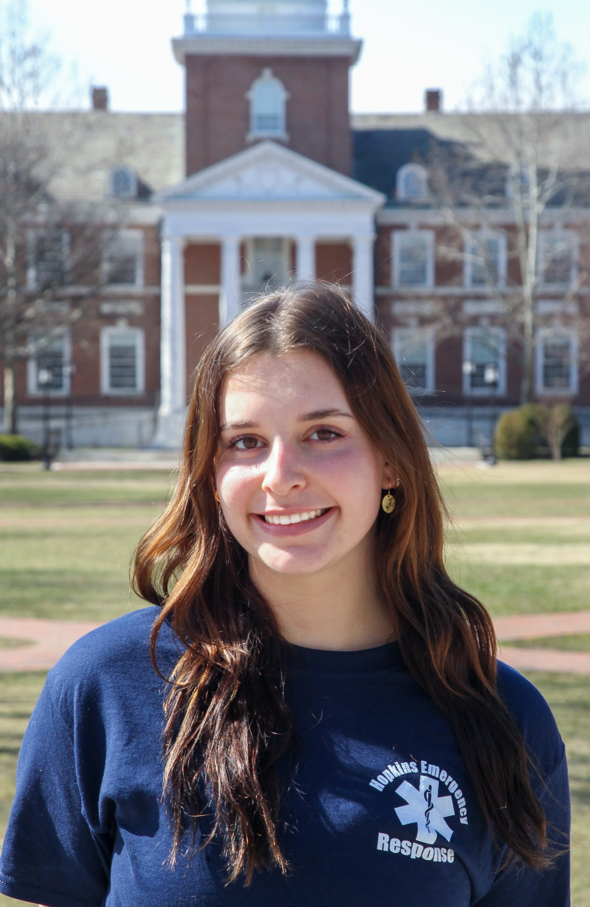
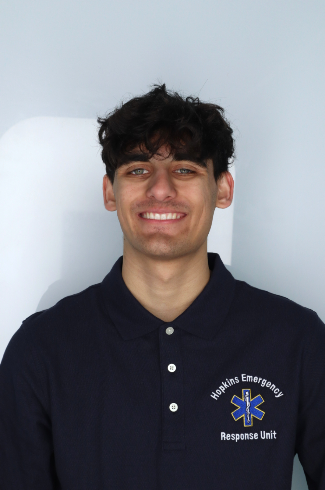
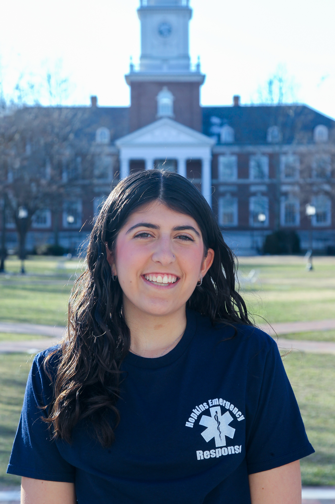
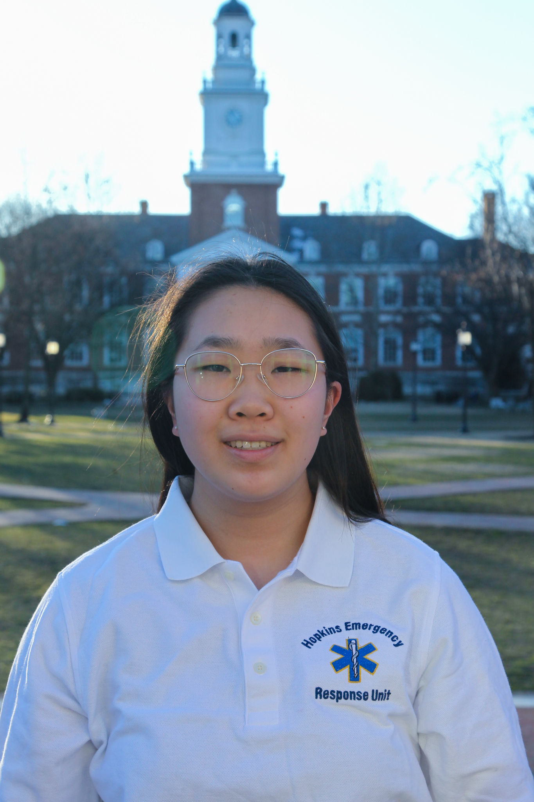
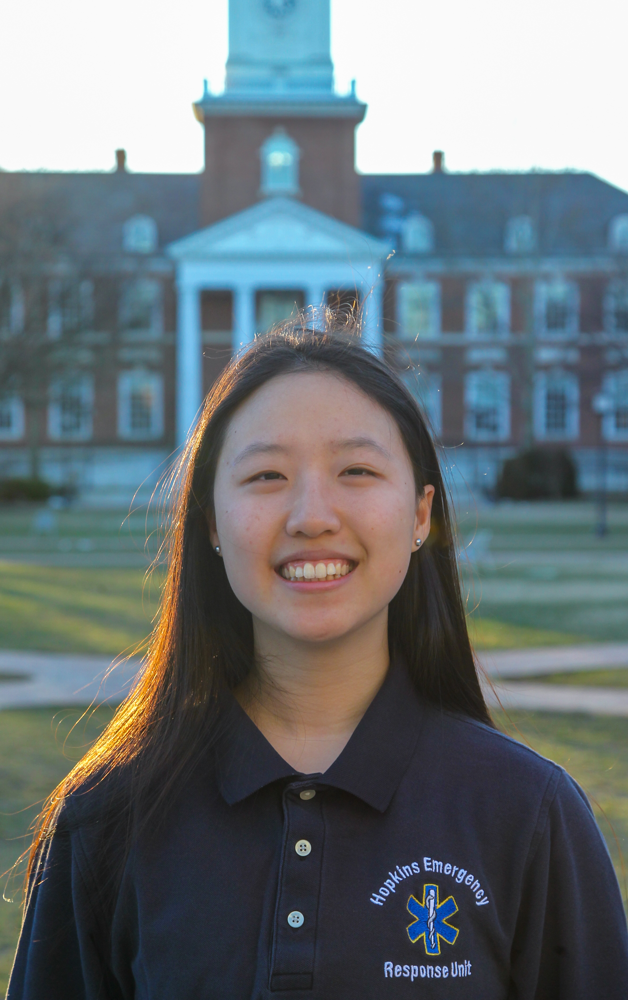
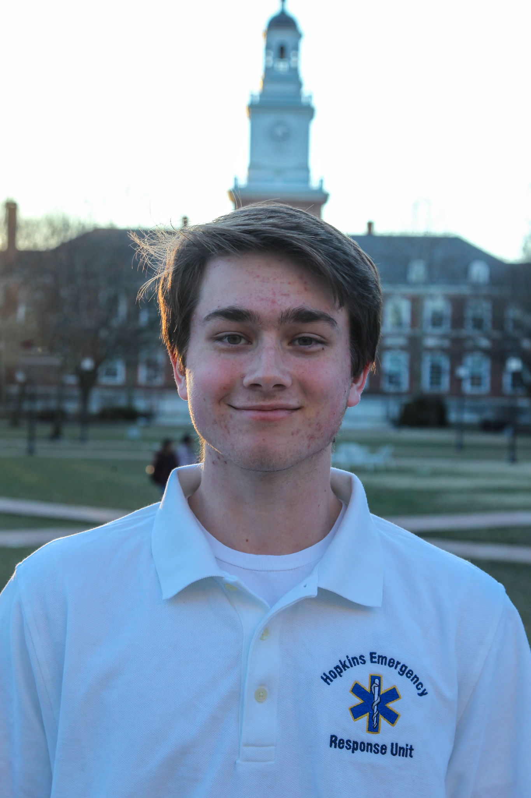

Leadership Team
Meet the administrative and operational heart of HERO
Overview
HERO has two branches: an administrative branch overseen by the Board of Directors and an operational branch overseen by the Operations Board. Together, the boards work to maintain the integrity of HERO's policy decisions, mission, and vision.
Meet the Board
Captain: Betania Arce
Email
Betania Arce is honored to be serving as the Captain for 2024. Betania is from Miami, Florida and is majoring in Biomedical Engineering (co 2026). She joined HERO as a prior EMT her freshman spring. As President, Betania helps lead BOD and connects with HERO admin. Outside of HERO, Betania does research at Bayview and finds new coffee shops.

President: Erika Flickinger
Email
Erika is from Decatur, Illinois and is majoring in Computer Science & Cognitive Science (co 2026). She joined HERO as a non prior EMT her sophomore spring. As President, Erika helps lead BOD and connects with HERO admin. Outside of HERO, Erika enjoys yoga, spending time with friends, and exploring coffee shops.
 Personnel Lieutenant: Will Taggart
Email
Personnel Lieutenant: Will Taggart
Email
Will is from Livermore, California, and is double majoring in Public Health and Film/Media Studies (co 2026). He joined HERO as a new EMT his freshman fall. Outside of HERO, Will likes to run, make short films, and do smoking cessation research. He previously served as a selections officer, is a current Field Training Officer on HERO, and is thrilled to be serving as HEROs Personnel Lieutenant this year.

EMS Lieutenant: Dillon Paul
Email
Dillon is from New York, and is majoring in Biophysics (co 2025).
 Equipment Officer: Shaan Shabbir
Email
Equipment Officer: Shaan Shabbir
Email
Shaan is from Danville, California and is double majoring in Molecular and Cellular Biology and Public Health (co2026). He joined HERO as a new EMT his freshman fall. Outside of HERO, Shaan enjoys cooking, playing/watching cricket along with UFC and other sports, nature photography and hikes, hanging around with friends, or enjoying some good music.
 Recruitment Officer: Micaela Rodriguez Steube
Email
Recruitment Officer: Micaela Rodriguez Steube
Email
Micaela grew up between the Bay Area, California and Southern Hong Kong. She is a Molecular and Cellular Biology and Computer Science double major (co 2025). Micaela joined HERO in the fall of 2022 as a new EMT. Outside of HERO, Micaela is on the board of the Johns Hopkins Pediatric Emergency Department Volunteer Program and is part of a genetics research lab that studies the C. elegans roundworm. She also enjoys traveling and is learning how to surf. Micaela is so excited to run this year’s recruitment process.
 Training Officer: Emma Anderson
Email
Training Officer: Emma Anderson
Email
Emma is a senior majoring in Biomedical Engienering. She joined HERO during her freshman year as a new EMT and has previously served as Recruitment Officer. As Training Officer, she is responsible for training the new class of EMTs and ensuring they pass all the necessary examinations to become an EMT. She also delivers effective trainings to HERO members every week.

Secretary: Cameron Fields
Email
Cameron is from Ocean Township, New Jersey and is majoring in Public Health (co 2026). She joined HERO as a new EMT her freshman fall. As secretary, Cameron helps ensure organization within HERO and manages HERO's social media. Outside of HERO, Cameron is a part of Hillel and Kappa Alpha Theta, and enjoys spending time outside, especially at the beach.
 Treasurer: Rowan Mohamed
Email
Treasurer: Rowan Mohamed
Email
Rowan is from New York City, New York studying Public Health and AMS (co 2025). She joined HERO as a new EMT her sophomore fall. As treasurer, Rowan finds funding sources for HERO and successfully raises money for the organization. Outside of HERO, Rowan is part of Blue Key Society and MSA, does psychology research at the Hopkins medical campus, and enjoys photography, painting, and art.
 Member At Large: Jennifer lin
Email
Member At Large: Jennifer lin
Email
Jennifer is from Houston, Texas and is majoring in Public Health (co 2026). She joined HERO as a new EMT her freshman fall. Outside of HERO, Jennifer does research at the Asthma and Allergy Center and involved in HCC, the Pediatric Emergency Department, Child life, and Pilot. As Member at Large, she helps bring the voice of all of HERO's members to the board.
Meet the Coordinators
Training Coordinator: Jennifer Lin
Email
Jennifer is a junior studying public health. She collaborates with the Training Officer to design and execute customized weekly trainings to all HERO members, helping ensure our continued quality service.
 CPR & Stop the Bleed Coordinator: Shek Pasupuleti
Email
CPR & Stop the Bleed Coordinator: Shek Pasupuleti
Email
Shek is a junior studying neuroscience. He arranges HERO's CPR and Stop the Bleed classes for community members.
 Equipment Coordinator: Lia Melvin
Email
Equipment Coordinator: Lia Melvin
Email
Lia is a sophomore majoring in behavioral biology from Joppa, Maryland. She assists the Equipment Officer in organizing HERO's inventory, ensuring our supplies are ample and functional, and maintaining our squad room as an excellent space for HERO's various uses of it.

Equipment Coordinator: Olivia Zhang
Email
Olivia is a sophomore majoring in neuroscience from Toronto, Canada. She assists the Equipment Officer in organizing HERO's inventory, ensuring our supplies are ample and functional, and maintaining our squad room as an excellent space for HERO's various uses of it.

Standby Coordinator: Joy Fei
Email
Joy is a junior majoring in biophysics and moleculuar cellular & biology from Boston. She arranges HERO's standbys, so that we are present to provide emergency medical services at events like sports games to major Hopkins traditions such as Commencement.
Selections Officers
-

Grant Dahl
-

Erika Flickinger
-

Clay Tomlinson
-
Katie Chong